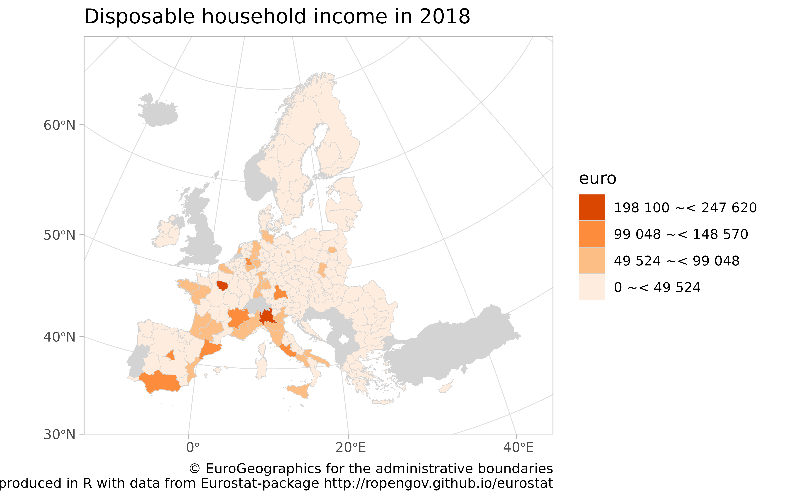

R Tools for Eurostat Open Data: maps
This rOpenGov R package provides tools to access Eurostat database, which you can also browse on-line for the data sets and documentation. For contact information and source code, see the package website.
See eurostat vignette for installation and basic use.
Maps
NOTE: we recommend to check also the giscoR package (https://dieghernan.github.io/giscoR/). This is another
API package that provides R tools for Eurostat geographic data to
support geospatial analysis and visualization.
Disposable income of private households by NUTS 2 regions at 1:60mln resolution using tmap
The mapping examples below use tmap
package.
library(dplyr)
#>
#> Attaching package: 'dplyr'
#> The following objects are masked from 'package:stats':
#>
#> filter, lag
#> The following objects are masked from 'package:base':
#>
#> intersect, setdiff, setequal, union
library(eurostat)
library(sf)
#> Linking to GEOS 3.10.2, GDAL 3.4.1, PROJ 8.2.1; sf_use_s2() is TRUE
library(tmap)
# Download attribute data from Eurostat
sp_data <- eurostat::get_eurostat("tgs00026",
time_format = "raw"
) %>%
# subset to have only a single row per geo
dplyr::filter(time == 2010, nchar(geo) == 4) %>%
# categorise
dplyr::mutate(income = cut_to_classes(values, n = 5))
# Download geospatial data from GISCO
geodata <- get_eurostat_geospatial(
output_class = "sf",
resolution = "60",
nuts_level = 2,
year = 2013
)
#> Object cached at /tmp/RtmpnOLg2a/r_cache2/sf60220134326.RData
#> sf at resolution 1: 60 cached at: /tmp/RtmpnOLg2a/r_cache2/sf60220134326.RData
#> Warning in get_eurostat_geospatial(output_class = "sf", resolution = "60", :
#> Default of 'make_valid' for 'output_class="sf"' will be changed in the future
#> (see function details).
# merge with attribute data with geodata
map_data <- inner_join(geodata, sp_data)
#> Joining with `by = join_by(geo)`Construct the map
# Fix / remove some broken entries for the demo purpose
geodata <- sf::st_make_valid(geodata)
geodata <- geodata[sf::st_is_valid(geodata), ]
# Create and plot the map
map1 <- tmap::tm_shape(geodata) +
tmap::tm_fill("lightgrey") +
tmap::tm_shape(map_data) +
tmap::tm_grid() +
tmap::tm_polygons("income",
title = "Disposable household\nincomes in 2010",
palette = "Oranges"
)
print(map1)
Interactive maps can be generated as well
Disposable income of private households by NUTS 2 regions in Poland with labels at 1:1mln resolution using tmap
library(eurostat)
library(dplyr)
library(sf)
library(RColorBrewer)
# Downloading and manipulating the tabular data
print("Let us focus on year 2014 and NUTS-3 level")
#> [1] "Let us focus on year 2014 and NUTS-3 level"
euro_sf2 <- get_eurostat("tgs00026",
time_format = "raw",
filter = list(time = "2014")
) %>%
# Subset to NUTS-3 level
dplyr::filter(grepl("PL", geo)) %>%
# label the single geo column
mutate(
label = paste0(label_eurostat(.)[["geo"]], "\n", values, "€"),
income = cut_to_classes(values)
)
#> Table tgs00026 cached at /tmp/RtmpnOLg2a/r_cache2/tgs00026_raw_code_FF.rds
print("Download geospatial data from GISCO")
#> [1] "Download geospatial data from GISCO"
geodata <- get_eurostat_geospatial(output_class = "sf", resolution = "60", nuts_level = 2, year = 2013)
#> Object cached at /tmp/RtmpnOLg2a/r_cache2/sf60220134326.RData
#> Reading cache file /tmp/RtmpnOLg2a/r_cache2/sf60220134326.RData
#> sf at resolution 1: 60 from year 2013 read from cache file: /tmp/RtmpnOLg2a/r_cache2/sf60220134326.RData
# Merge with attribute data with geodata
map_data <- inner_join(geodata, euro_sf2)
#> Joining with `by = join_by(geo)`
# Fix / remove some broken entries for the demo purpose
geodata <- sf::st_make_valid(geodata)
geodata <- geodata[sf::st_is_valid(geodata), ]
# plot map
library(tmap)
map2 <- tm_shape(geodata) +
tm_fill("lightgrey") +
tm_shape(map_data, is.master = TRUE) +
tm_polygons("income",
title = "Disposable household incomes in 2014",
palette = "Oranges", border.col = "white"
) +
tm_text("NUTS_NAME", just = "center") +
tm_scale_bar()
map2
Disposable income of private households by NUTS 2 regions at 1:10mln resolution using spplot
library(sp)
library(eurostat)
library(dplyr)
library(RColorBrewer)
dat <- get_eurostat("tgs00026", time_format = "raw") %>%
# subsetting to year 2014 and NUTS-2 level
dplyr::filter(time == 2014, nchar(geo) == 4) %>%
# classifying the values the variable
dplyr::mutate(cat = cut_to_classes(values))
# Download geospatial data from GISCO
geodata <- get_eurostat_geospatial(output_class = "spdf", resolution = "10", nuts_level = 2, year = 2013)
# merge with attribute data with geodata
geodata@data <- left_join(geodata@data, dat)
# plot map
sp::spplot(
obj = geodata, "cat", main = "Disposable household income",
xlim = c(-22, 34), ylim = c(35, 70),
col.regions = c("dim grey", brewer.pal(n = 5, name = "Oranges")),
col = "white", usePolypath = FALSE
)Disposable income of private households by NUTS 2 regions at 1:60mln resolution using ggplot2
Meanwhile the CRAN version of ggplot2 is lacking support
for simple features, you can plot maps with ggplot2 by
downloading geospatial data as data.frame with
output_class argument set as df.
# Disposable income of private households by NUTS 2 regions at 1:60mln res
library(eurostat)
library(dplyr)
library(ggplot2)
data_eurostat <- get_eurostat("tgs00026", time_format = "raw") %>%
dplyr::filter(time == 2018, nchar(geo) == 4) %>%
# classifying the values the variable
dplyr::mutate(cat = cut_to_classes(values))
# Download geospatial data from GISCO
data_geo <- get_eurostat_geospatial(resolution = "60", nuts_level = "2", year = 2021)
#> Object cached at /tmp/RtmpnOLg2a/r_cache2/sf60220214326.RData
#> sf at resolution 1: 60 cached at: /tmp/RtmpnOLg2a/r_cache2/sf60220214326.RData
#> Warning in get_eurostat_geospatial(resolution = "60", nuts_level = "2", :
#> Default of 'make_valid' for 'output_class="sf"' will be changed in the future
#> (see function details).
# merge with attribute data with geodata
data <- inner_join(data_geo, data_eurostat)
#> Joining with `by = join_by(geo)`
## Joining, by = "geo"
ggplot(data = data) +
geom_sf(aes(fill = cat), color = "dim grey", size = 0.1) +
scale_fill_brewer(palette = "Oranges") +
guides(fill = guide_legend(reverse = TRUE, title = "euro")) +
labs(
title = "Disposable household income in 2018",
caption = "(C) EuroGeographics for the administrative boundaries
Map produced in R with data from Eurostat-package <http://ropengov.github.io/eurostat>"
) +
theme_light() +
theme(legend.position = c(.8, .8)) +
coord_sf(xlim = c(-12, 44), ylim = c(35, 70))
Citations and related work
Citing the data sources
Eurostat data: cite Eurostat.
Administrative boundaries: cite EuroGeographics
Citing the eurostat R package
For main developers and contributors, see the package homepage.
This work can be freely used, modified and distributed under the BSD-2-clause (modified FreeBSD) license:
citation("eurostat")
#>
#> Kindly cite the eurostat R package as follows:
#>
#> (C) Leo Lahti, Janne Huovari, Markus Kainu, Przemyslaw Biecek.
#> Retrieval and analysis of Eurostat open data with the eurostat
#> package. R Journal 9(1):385-392, 2017. doi: 10.32614/RJ-2017-019
#> Package URL: http://ropengov.github.io/eurostat Article URL:
#> https://journal.r-project.org/archive/2017/RJ-2017-019/index.html
#>
#> A BibTeX entry for LaTeX users is
#>
#> @Article{,
#> title = {Retrieval and Analysis of Eurostat Open Data with the eurostat Package},
#> author = {Leo Lahti and Janne Huovari and Markus Kainu and Przemyslaw Biecek},
#> journal = {The R Journal},
#> volume = {9},
#> number = {1},
#> pages = {385--392},
#> year = {2017},
#> doi = {10.32614/RJ-2017-019},
#> url = {https://doi.org/10.32614/RJ-2017-019},
#> }Contact
For contact information, see the package homepage.
Version info
This tutorial was created with
sessionInfo()
#> R version 4.2.2 (2022-10-31)
#> Platform: x86_64-pc-linux-gnu (64-bit)
#> Running under: Ubuntu 22.04.2 LTS
#>
#> Matrix products: default
#> BLAS: /usr/lib/x86_64-linux-gnu/openblas-pthread/libblas.so.3
#> LAPACK: /usr/lib/x86_64-linux-gnu/openblas-pthread/libopenblasp-r0.3.20.so
#>
#> locale:
#> [1] LC_CTYPE=C.UTF-8 LC_NUMERIC=C LC_TIME=C.UTF-8
#> [4] LC_COLLATE=C.UTF-8 LC_MONETARY=C.UTF-8 LC_MESSAGES=C.UTF-8
#> [7] LC_PAPER=C.UTF-8 LC_NAME=C LC_ADDRESS=C
#> [10] LC_TELEPHONE=C LC_MEASUREMENT=C.UTF-8 LC_IDENTIFICATION=C
#>
#> attached base packages:
#> [1] stats graphics grDevices utils datasets methods base
#>
#> other attached packages:
#> [1] ggplot2_3.4.1 RColorBrewer_1.1-3 tmap_3.3-3 sf_1.0-9
#> [5] dplyr_1.1.0 eurostat_3.7.14
#>
#> loaded via a namespace (and not attached):
#> [1] fs_1.6.1 bit64_4.0.5 lubridate_1.9.2
#> [4] httr_1.4.4 rprojroot_2.0.3 tools_4.2.2
#> [7] backports_1.4.1 bslib_0.4.2 utf8_1.2.3
#> [10] R6_2.5.1 KernSmooth_2.23-20 colorspace_2.1-0
#> [13] DBI_1.1.3 raster_3.6-14 withr_2.5.0
#> [16] sp_1.6-0 tidyselect_1.2.0 leaflet_2.1.1
#> [19] bit_4.0.5 curl_5.0.0 compiler_4.2.2
#> [22] leafem_0.2.0 textshaping_0.3.6 cli_3.6.0
#> [25] Cairo_1.6-0 xml2_1.3.3 desc_1.4.2
#> [28] sass_0.4.5 scales_1.2.1 classInt_0.4-8
#> [31] readr_2.1.4 proxy_0.4-27 pkgdown_2.0.7
#> [34] systemfonts_1.0.4 stringr_1.5.0 digest_0.6.31
#> [37] rmarkdown_2.20 base64enc_0.1-3 dichromat_2.0-0.1
#> [40] pkgconfig_2.0.3 htmltools_0.5.4 bibtex_0.5.1
#> [43] highr_0.10 fastmap_1.1.0 htmlwidgets_1.6.1
#> [46] rlang_1.0.6 readxl_1.4.2 farver_2.1.1
#> [49] jquerylib_0.1.4 generics_0.1.3 jsonlite_1.8.4
#> [52] vroom_1.6.1 crosstalk_1.2.0 magrittr_2.0.3
#> [55] s2_1.1.2 munsell_0.5.0 Rcpp_1.0.10
#> [58] fansi_1.0.4 abind_1.4-5 RefManageR_1.4.0
#> [61] lifecycle_1.0.3 terra_1.7-3 stringi_1.7.12
#> [64] leafsync_0.1.0 yaml_2.3.7 tmaptools_3.1-1
#> [67] plyr_1.8.8 grid_4.2.2 parallel_4.2.2
#> [70] crayon_1.5.2 regions_0.1.8 lattice_0.20-45
#> [73] stars_0.6-0 hms_1.1.2 knitr_1.42
#> [76] pillar_1.8.1 ISOweek_0.6-2 codetools_0.2-18
#> [79] wk_0.7.1 XML_3.99-0.13 glue_1.6.2
#> [82] evaluate_0.20 vctrs_0.5.2 png_0.1-8
#> [85] tzdb_0.3.0 cellranger_1.1.0 gtable_0.3.1
#> [88] purrr_1.0.1 tidyr_1.3.0 assertthat_0.2.1
#> [91] cachem_1.0.7 xfun_0.37 mime_0.12
#> [94] lwgeom_0.2-11 broom_1.0.3 countrycode_1.4.0
#> [97] e1071_1.7-13 ragg_1.2.5 class_7.3-20
#> [100] viridisLite_0.4.1 tibble_3.1.8 memoise_2.0.1
#> [103] units_0.8-1 timechange_0.2.0 ellipsis_0.3.2
#> [106] here_1.0.1